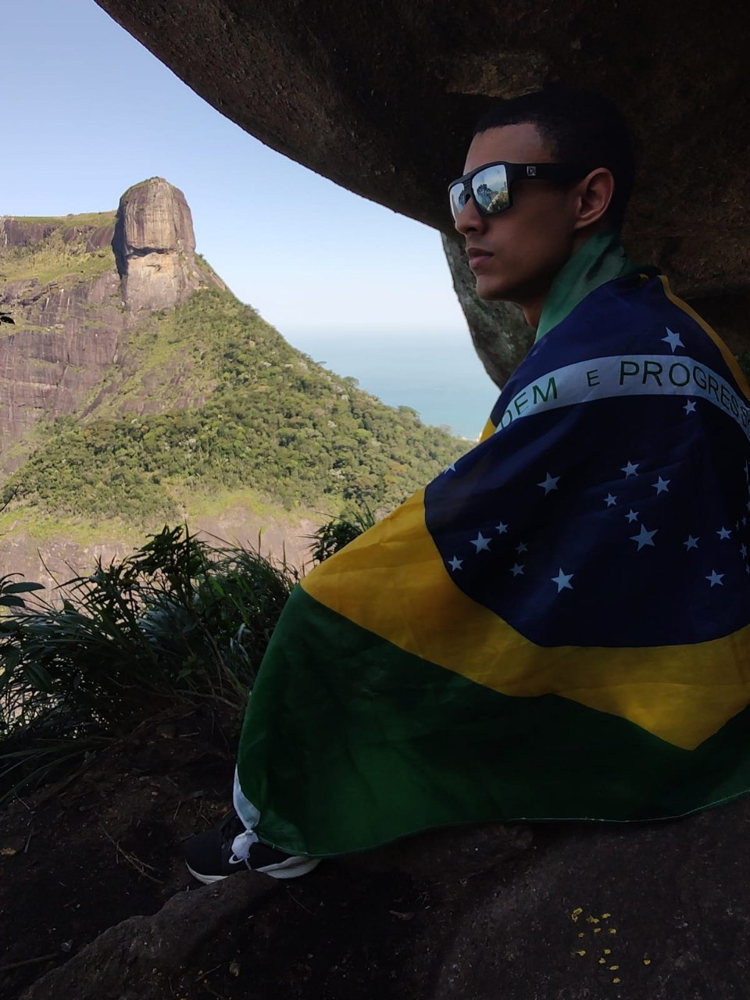

Oi! Meu nome é Leonardo. Atualmente sou um Dev em desenvolvimento que tem como objetivo principal atuar com excelêcia a profissão de Dev Learning (Área para qual estou me preparando agora), e seus cargos subsequentes.
Sou apaixonado por games e tudo o que envola esse nicho
Gosto de fazer trilhas; o cheiro do mato me trás paz e ajuda a me conectar comigo mesmo.
Também sou pai de pets, tenho dois gatos e uma cadelinha, ambos maravilhosos e com um caráter único